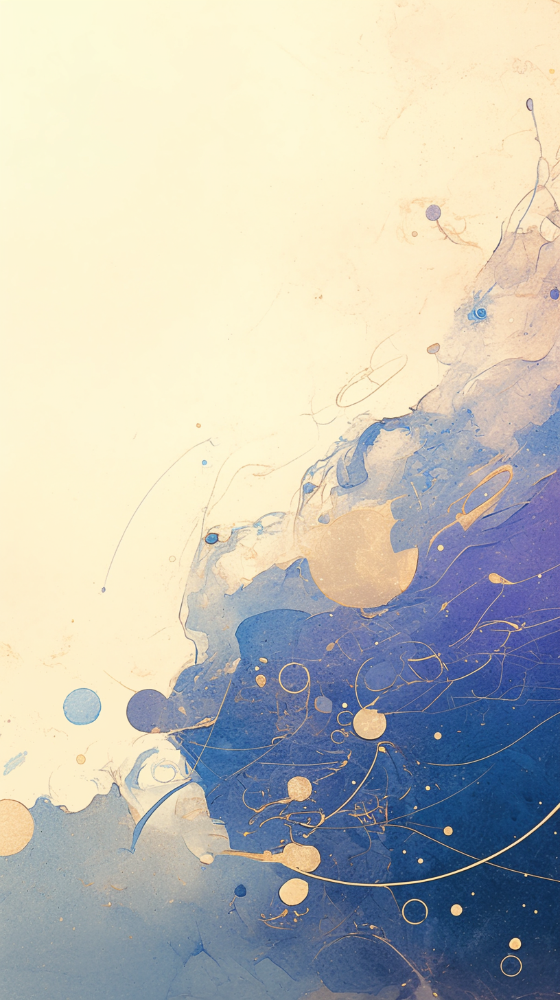
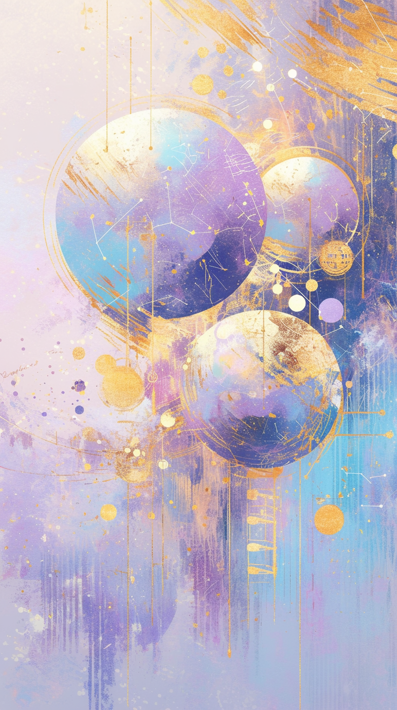
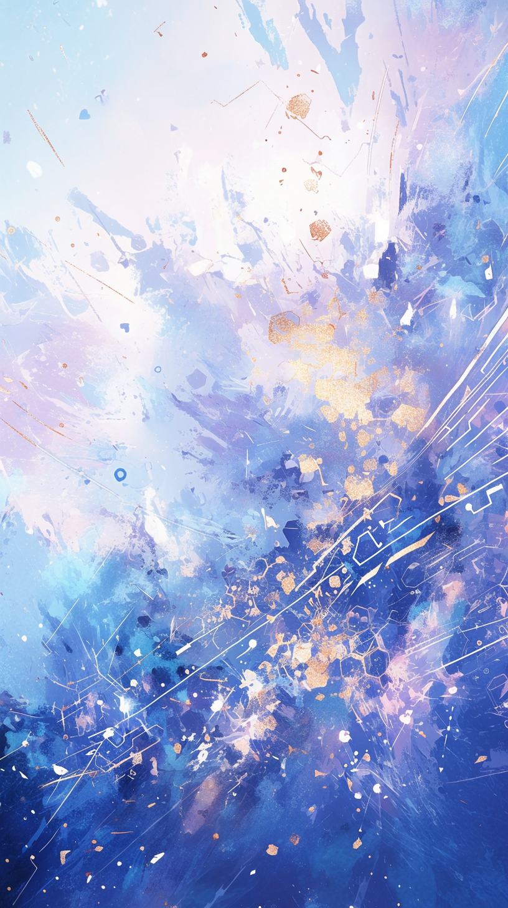
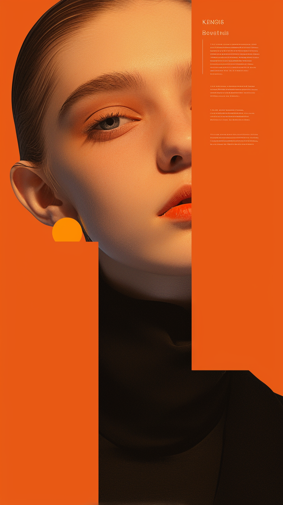
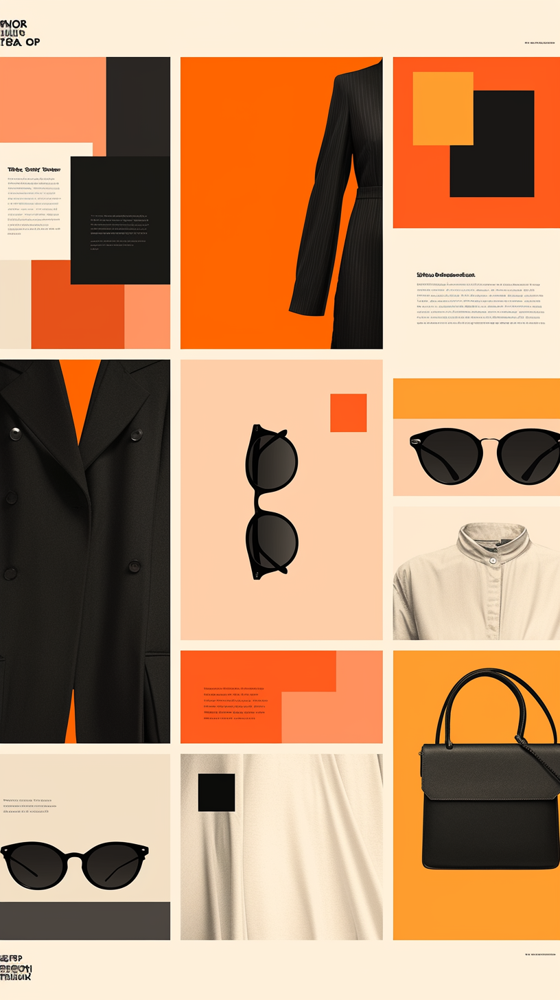
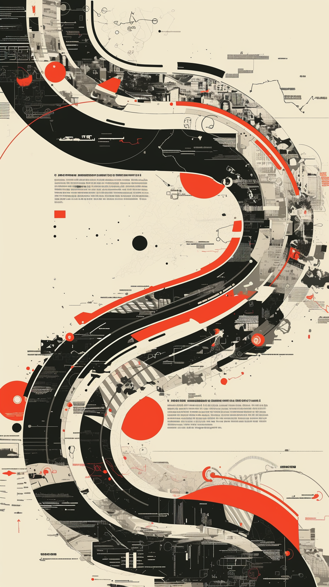

概述
本案例展示了如何利用各类 AI 工具策划和设计一场技术分享会的视觉传达方案。分享会主题聚焦于 AI 大模型在设计、艺术创作和学术研究中的应用，展示如何将不同 AI 工具的优势结合，提升设计效率。
首先使用文本类AI优化文案并给出排版建议，随后利用Midjourney生成图形内容，最后合成调整
设计流程展示
1. 文案优化与排版
文本生成 Prompt：
请帮我优化生成以下技术分享会的海报文案内容，并给出排版建议：
分享会主题：AI大模型X艺术设计X学术科研的技巧分享
时间：2025年3月12日 19:30
地点：待定
主要内容：AI大模型介绍、艺术设计与学术研究辅助技巧分享
Deepseek回复的文案及排版建议：
一、文案内容
【主标题】
破界·智创 | AI大模型 × 艺术设计 × 学术科研 三维赋能工作流
【核心副标题】
从技术内核到跨领域应用——解锁人工智能时代的创新方法论
【内容亮点】
硬核技术解读
- 大模型技术演进图谱：从Transformer到多模态架构
- 行业级模型选型指南：Stable Diffusion/CLIP/DALL·E特性解析
艺术设计赋能
- 智能生成与人工审美的协同创作
- 设计迭代效率提升300%的Prompt工程
- 材质渲染/构图优化/风格迁移实战案例
学术科研加速
- 文献智能处理：从海量数据到知识图谱构建
- 跨学科研究中的可视化表达范式
- 实验设计优化与数据分析的AI增强策略
【特别说明】
- 现场演示最新工具链（支持Windows/macOS双平台）
- 参会即赠《AIGC效率工具包》（含独家提示词库）
时间：2025.3.12 19:30-21:30（含QA环节）
地点：待定（报名成功后通知）
参与方式：扫码报名 → 锁定席位 → 获取预习资料
二、排版设计建议
主视觉风格
- 三维层叠设计：底层AI神经元网络 + 中层艺术笔触 + 顶层学术符号
- 动态光效：使用渐隐线框表现数据流动，主标题采用霓虹光效字体
- 配色方案：科技蓝(#4A90E2) → 艺术紫(#8A2BE2) → 学术金(#FFD700)渐变
信息层级设计
- 标题区：占海报顶部1/3，使用错位排版增强立体感
- 核心内容：左侧1/2区域采用「模块化信息岛」设计
- 视觉动线：用发光箭头串联三大主题板块
字体与细节处理
- 主标题：优设标题黑 + Orbitron（英文）
- 正文：思源黑体Medium+Light组合
- 技术术语：Consolas等宽字体
- 尺寸建议：850×1200像素竖版，关键信息≥18pt
2. 视觉风格探索



3. 排版参考



推荐工具
核心工具
- 文本生成：ChatGPT / DeepSeek / Claude
- 图像生成：Midjourney / DALL-E 3
- 设计软件：Adobe Creative Suite